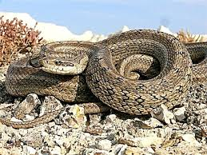

Жылан
Денесі жұмыр, ұзын (ұзындығы 8 см-ден 12 м-ге дейін жетеді). Денесін мүйізді қалқаншалар мен қабыршақтар, арқасы мен бүйірлерін ұзына бойы қатарласа орналасқан, ромбы тәрізді қабыршақтар жапқан. Бауыры көлденең жатқан ірі қалқаншалармен жабылған, олар бір-бірімен жұмсақ тері қатпарлармен жалғасқан. Ірі денелі жемтіктерді жұтқанда тері қатпарлары жазылып, құрсақ қалқаншаларының ұзына бойы созылуына мүмкіндік береді. Көздерінде қозғалмалы қабақтары болмайды, олар мөлдір қабықпен жабылған. Күндіз белсенді тіршілік ететін жыландардың көз қарашығы дөңгелек болса, ымыртта, түнде белсенді тіршілік ететіндерінде – тік бағытта орналасқан саңылау тәрізді.
Сыртқы құлақ (есту) тесігі және дабыл жарғағы болмайды. Сондықтан жыландар ауадағы дыбысты естімейді. Тілі ұзын, ұшы – айыр. Сезу қызметін тілі мен бір жұп Якобсон мүшесі атқарады. Якобсон мүшесі – кеңсіріктің ішкі жағындағы ауыз қуысына ашылатын, екінші ұшы тұйықталып біткен екі қуыс; бауырымен жорғалаушылар мен сүтқоректілерде болатын иіс сезу мүшесі (тек қолтырауын мен құстарда болмайды). Бұны дат анатомы Людвиг Якобсон ашқан. Тістері жіңішке, өткір, артқа қарай иілген, усыз жыландарда тістері жемтігін ұстау қызметін атқарады. Улы жыландардың үстіңгі жақтарында у ағатын өзекшесі бар улы тістері орналасқан, олар қозғалмалы (алға – артқа қарай) болып келеді. Жақ сүйектері бір-бірімен серпімді сіңір арқылы байланысқан. Мұндай байланыс аузын кең ашуға мүмкіндік беріп, ірі жемтіктерді тұтастай жұтуға жәрдемдеседі.

Аяқтары жоқ, тек айдаhарда, ұршық тәрізді жыландарда, соқыр жыландарда, бүрме ауызды жыландардың кейбір түрлерінде ғана жамбас белдеуінің қалдығы мен артқы аяқтарының тырнақ тәрізді жұрнағы сақталған. Иық және жамбас белдеулерінің болмауына байланысты омыртқа жотасы бөлімдерге анық жіктелмеген: қысқа әрі жуан жыландарда омыртқасының саны – 141, ал ұзын әрі жіңішкелерінде – 435-ке жетеді. Жыландар жылына 2 – 4 мәрте түлейді. Сыдырық (жыланның түлеген эпидермис қабығы) тұтастай түседі. Тіршілік ететін ортасына сәйкес реңі алуан түрлі келеді.
Жыландар Жер шарына кең тараған (тек Антарктидада ғана кездеспейді), 3 мыңға жуық түрі белгілі. Олар 12 тұқымдасқа бірігеді. Ең көбі – сарыбас жыландар, олардың 1500-дей түрі бар.